Тема: ПРОТОТИПИ. КЛАСИ. ОБ'ЄКТНА МОДЕЛЬ ДОКУМЕНТА (DOM). ПОДІЇ. ОБ'ЄКТ ПОДІЇ. ДЕЛЕГУВАННЯ ПОДІЙ.
Мета: придбати практичні навички роботи з DOM, подіями. делегуванням подій.
Посилання на репозиторії:
Посилання на живі сторінки:
Завдання 1 (у власному застосунку)
Реалізовано механізм делегування подій. Слухач подій додано на батьківський контейнер галереї; при кліку на конкретний елемент колекції відкривається модальне вікно з унікальним описом цього елемента.
Структура спливаючого вікна:
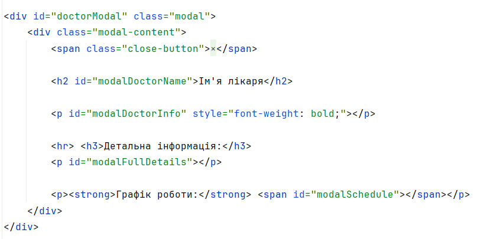Код реалізації:
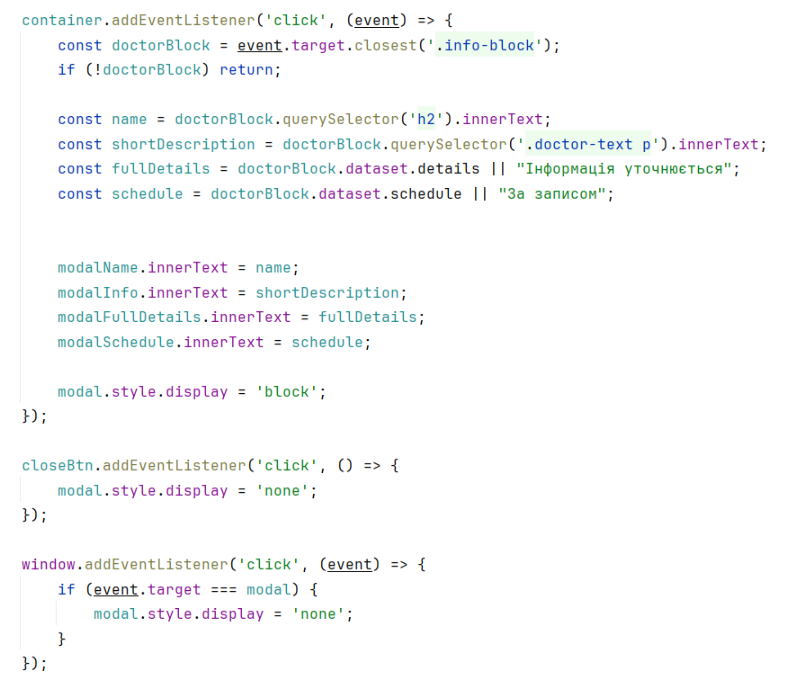Результат виконання коду:
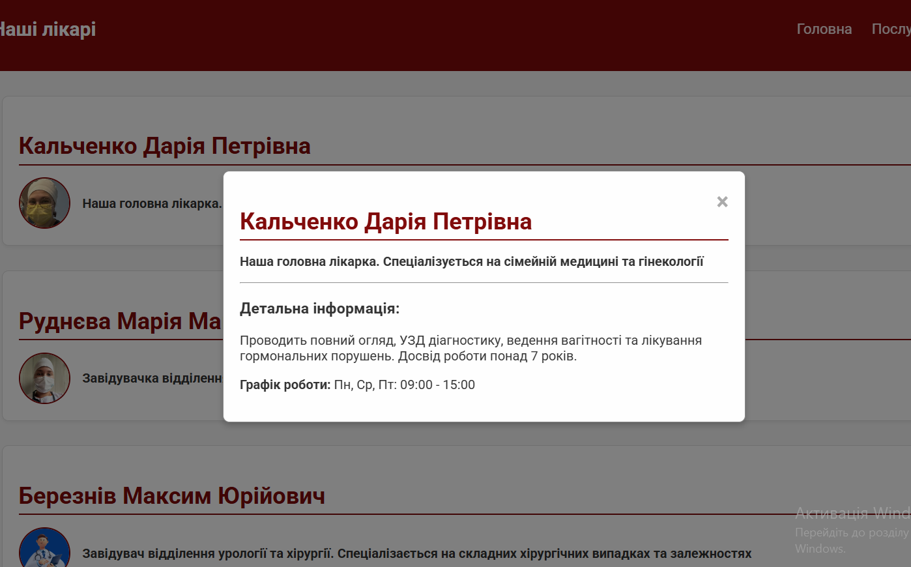Завдання 2 (з таблиці)
- Пункт 1: Реалізовано скрипт, який при натисканні на кнопку «SHOW ME» зчитує значення з текстового поля введення та виводить його у консоль браузера. 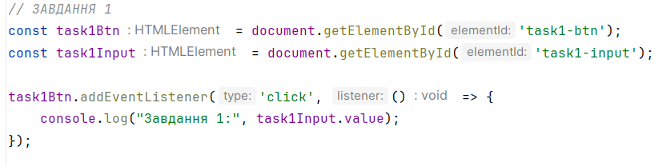
- Пункт 3: Створено поле для введення пароля з кнопкою перемикання видимості. При натисканні на кнопку тип інпуту змінюється з password на text (і навпаки), а текст кнопки — з «Розкрити» на «Приховати». 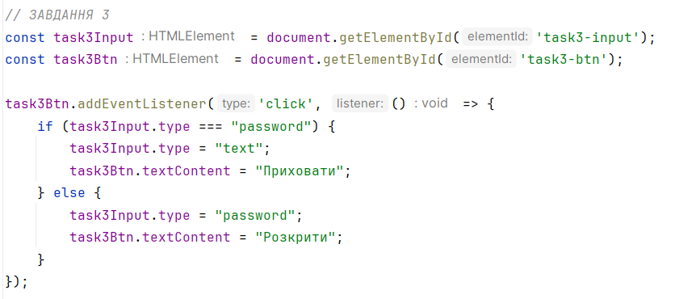
- Пункт 5: Додано прослуховувач події click на об'єкт window. Скрипт визначає цільовий елемент кліку (event.target): якщо це div з id="place", у консоль виводиться true, в іншому випадку - false. 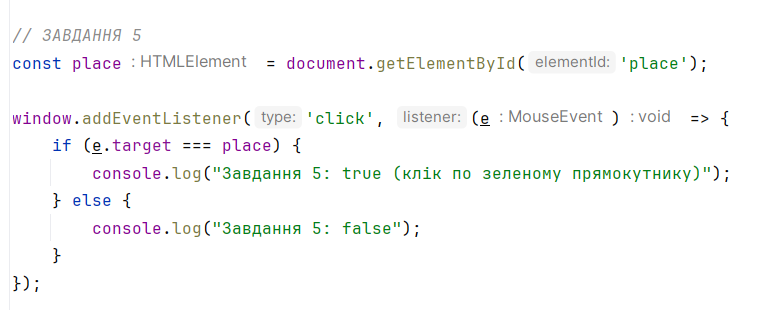
- Пункт 7: Написано скрипт для обробки списку категорій ul#categories. Використовуючи forEach, код виводить у консоль кількість категорій, назву кожної категорії та кількість вкладених елементів у ній. 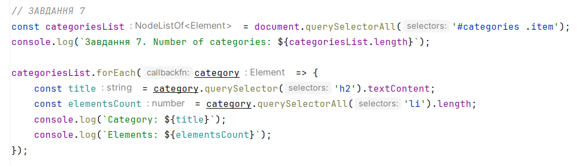
- Пункт 8: Реалізовано обробку форми логіна через подію submit. Скрипт запобігає перезавантаженню сторінки, перевіряє поля на заповненість, збирає введені дані в об'єкт, виводить його в консоль та очищає форму методом reset. 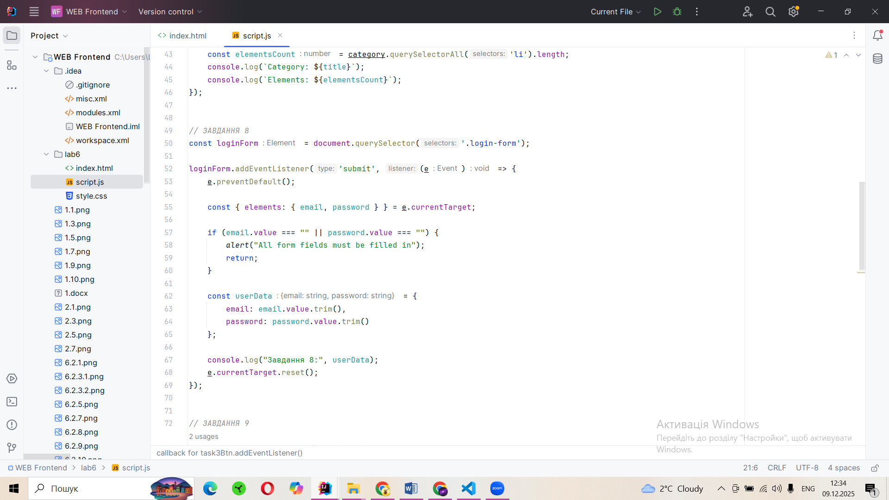
- Пункт 9: Створено функціонал зміни кольору фону сторінки на випадкове шістнадцяткове значення Hex при кліку на кнопку. Обраний колір також відображається текстовим вмістом у тегу span. 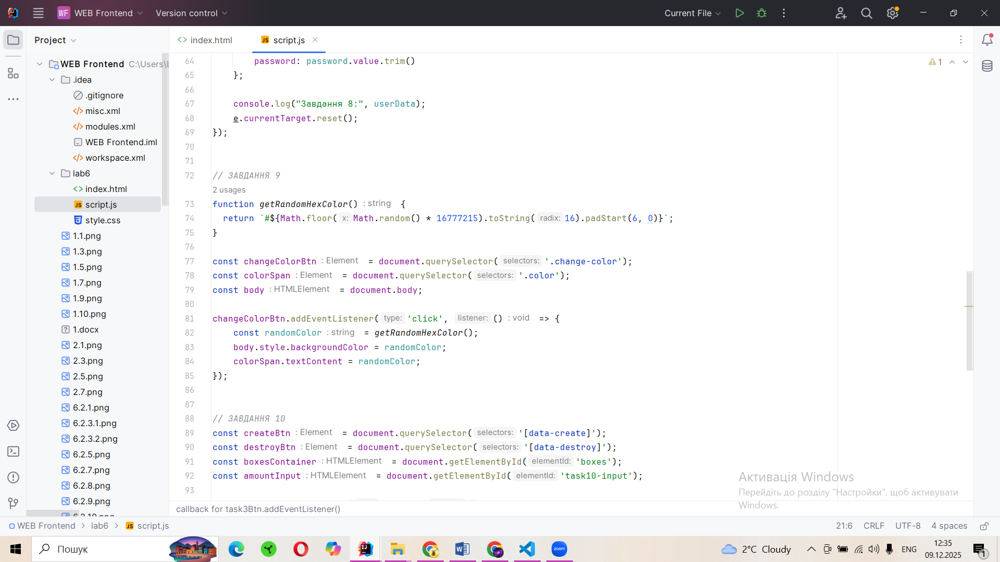
- Пункт 10: Розроблено інтерфейс для створення та очищення колекції елементів. Функція createBoxes генерує задану кількість кольорових квадратів, розміри яких збільшуються на 10px з кожним елементом. Функція destroyBoxes очищає DOM від цих елементів. 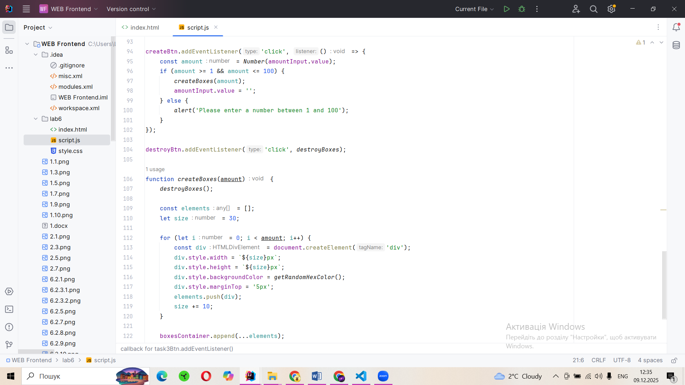
Результат виконання коду:
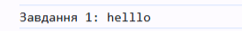Результат виконання коду:
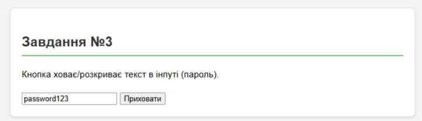 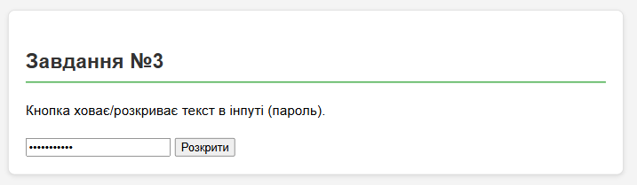Результат виконання коду:
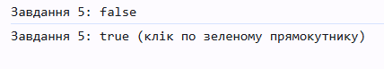Результат виконання коду:
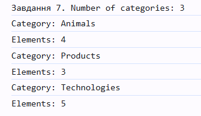Результат виконання коду:
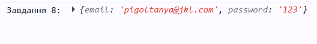Результат виконання коду:
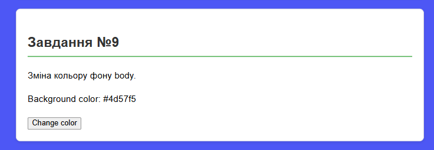Результат виконання коду:
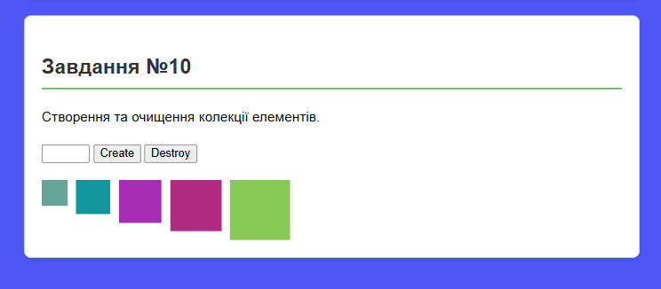Висновки:
У ході даної практичної роботи були отримані та покращені практичні навички роботи з об'єктною моделлю документа (DOM) та подіями в JavaScript. Я навчилася отримувати доступ до елементів DOM-дерева та маніпулювати їхніми властивостями, атрибутами й стилями; використовувати обробники подій для реалізації інтерактивності веб-сторінки, зокрема подій click та submit; керувати поведінкою форм, валідувати вхідні дані та запобігати перезавантаженню сторінки під час відправки даних; динамічно створювати та видаляти колекції елементів у DOM-дереві.
Також було реалізовано патерн делегування подій, що дозволяє оптимізувати код, встановлюючи один обробник на батьківський контейнер для управління групою дочірніх елементів.